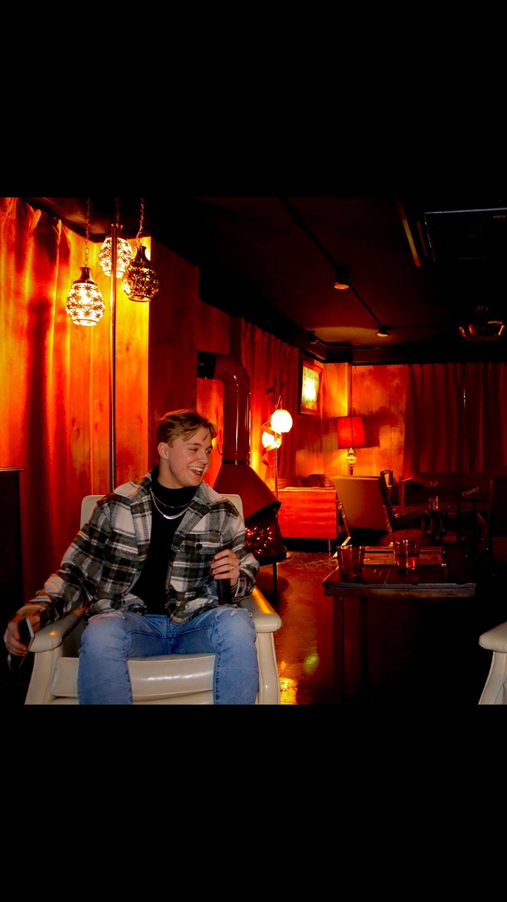
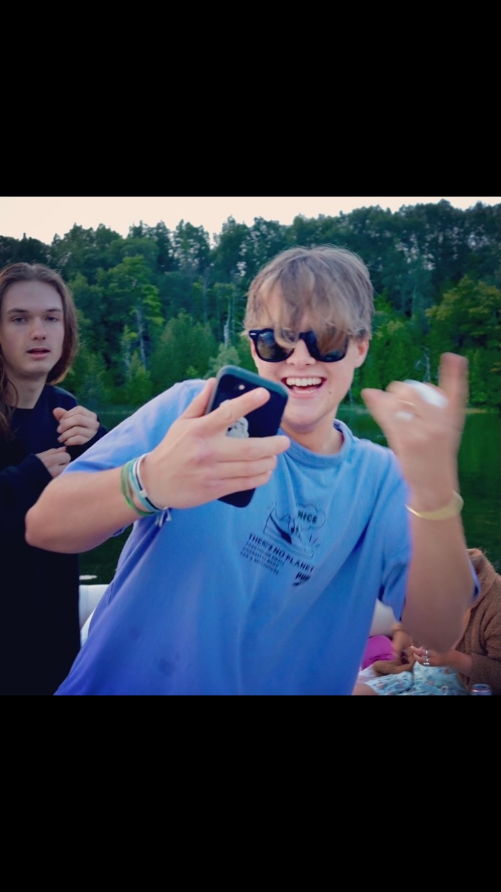
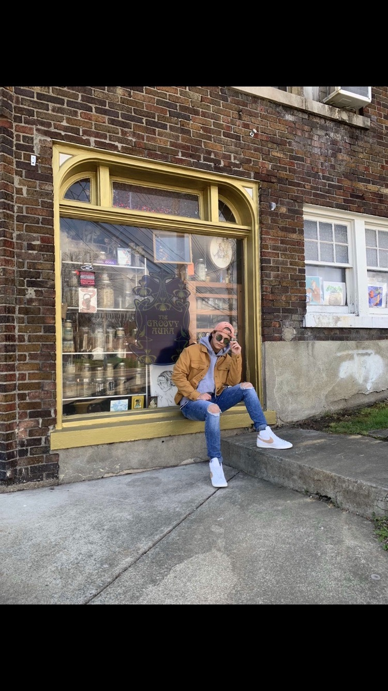
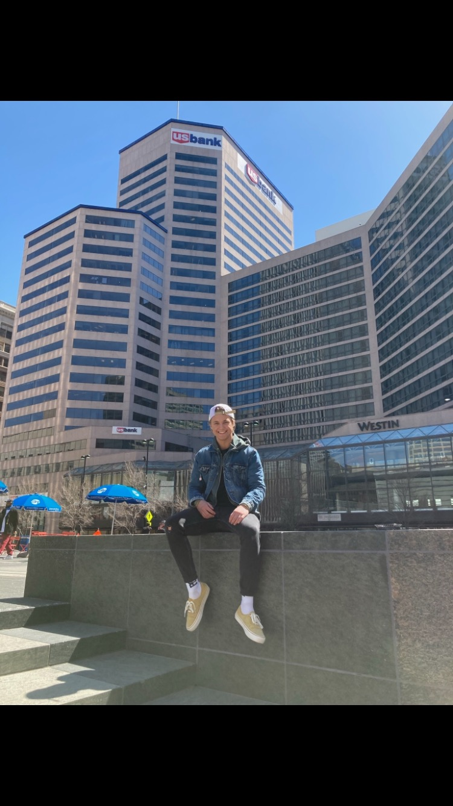
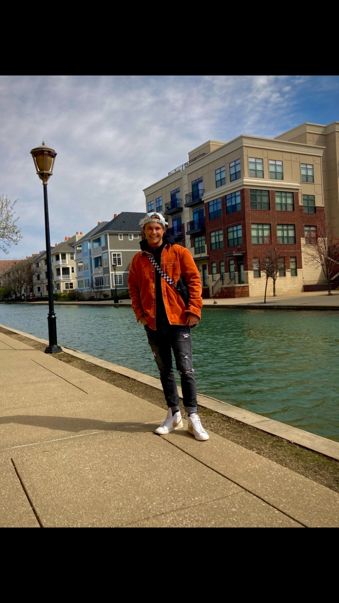
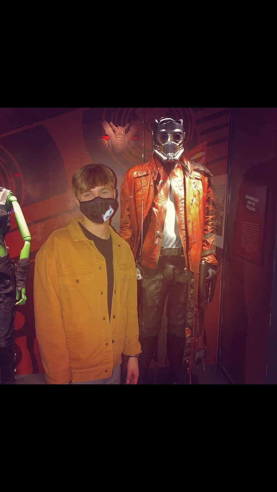
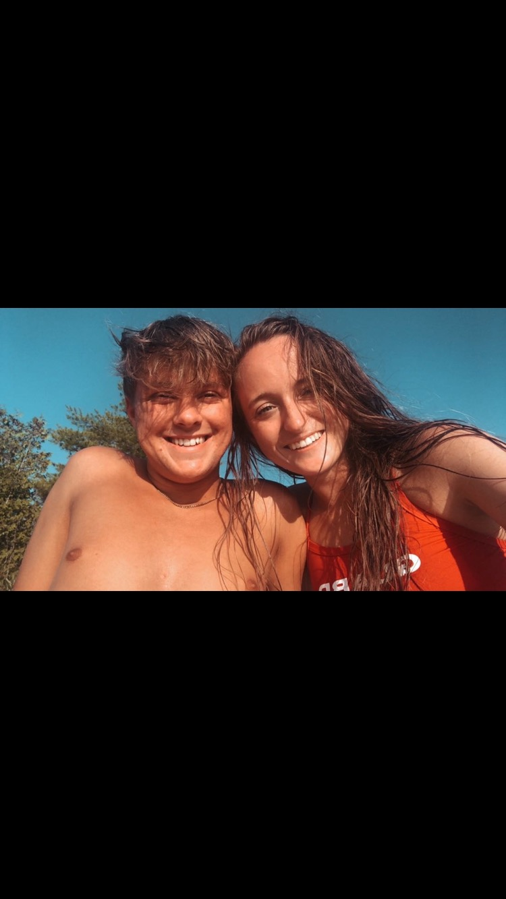
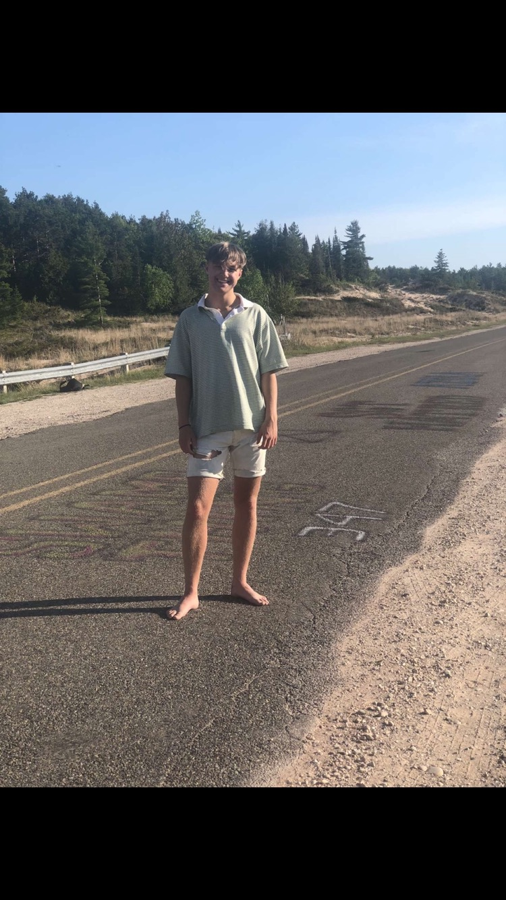
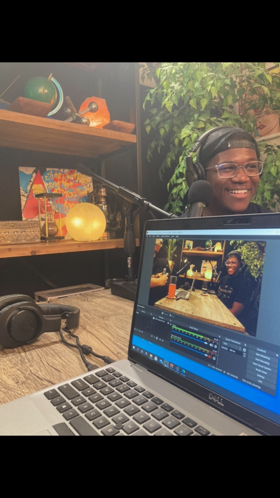

My mission is to create a a community and organization that showcases the reality of the world we live in. I believe inorder to achieve this goal the first step is to begin educating not only others but myself as well. This podcast is going to be about displaying real perspectives and real life stories to find the common phenomenon in a fascinating, relatable and awakening population. My intention with this podcast is to embody a conversation that highlights the perspectives and experiences of the "ordinary", like the majority of "normal" people in our society. This format allows for various people to come on and to provide their perspectives on many different topics based on the experiences and environments that not only shaped their interpretations of topics but themselves.
        